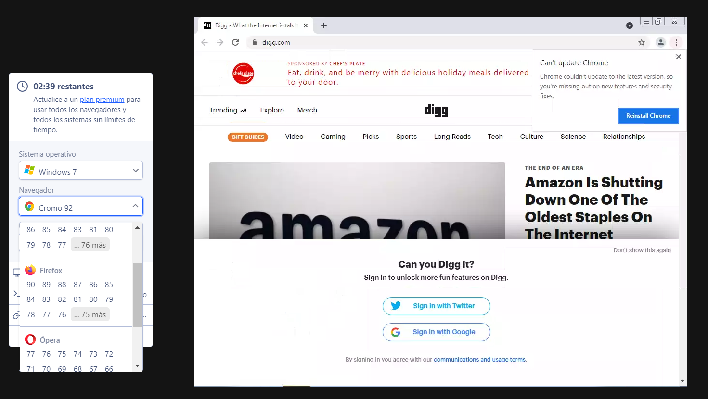

10. VERIFICACIÓN DE LA USABILIDAD EN DIFERENTES NAVEGADORES Y TECNOLOGÍAS.
Browserling.
Herramienta online para simular capturas de distintos navegadores de una forma muy sencilla.
Browserling nos permite tomar una instantanea de una página web en los principales navegadores, Internet Explorer, Chrome, Firefox, Safari y Opera, en todas sus versiones (incluso en versiones nightly).
https://www.browserling.com/ 